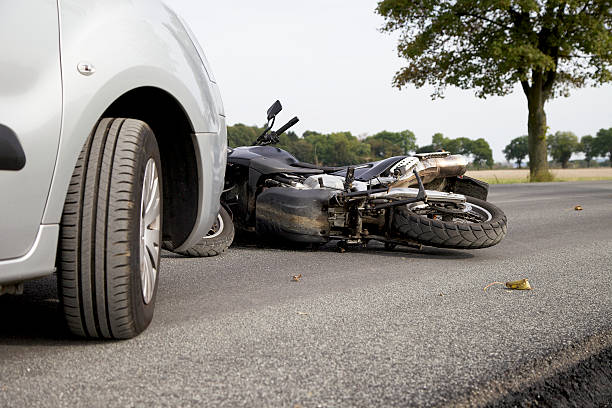

Kasus Kecelakaan Lalu Lintas: Proses Hukum dan Peran Penting Pengacara

.
Banyak orang tidak memahami langkah-langkah hukum yang harus diambil saat menghadapi kecelakaan, terutama jika mereka berada dalam posisi sebagai pelaku. Di sinilah peran pengacara menjadi krusial untuk memastikan bahwa hak dan kewajiban hukum semua pihak dijalankan dengan benar. Artikel ini akan membahas secara mendalam tentang bagaimana kasus kecelakaan diproses secara hukum serta bagaimana pengacara membantu kliennya menghadapi kasus ini.
1. Bagaimana Proses Hukum dalam Kasus Kecelakaan Lalu Lintas?
Setiap kecelakaan memiliki karakteristik yang berbeda, tetapi dalam hukum Indonesia, umumnya kasus kecelakaan dikategorikan berdasarkan tingkat keparahan dan akibat yang ditimbulkan.
Kategori Kecelakaan Berdasarkan Hukum Indonesia
Kecelakaan Ringan
Tidak ada korban jiwa, hanya kerusakan kendaraan atau benda lain.
Biasanya diselesaikan dengan damai antara pihak yang terlibat.
Jika dilaporkan ke polisi, bisa dikenai tilang atau denda administratif.
Kecelakaan dengan Luka Ringan atau Luka Berat
Korban mengalami luka yang memerlukan perawatan medis.
Bisa berujung pada tuntutan hukum pidana jika ada unsur kelalaian.
Kecelakaan yang Mengakibatkan Kematian
Pelaku bisa dijerat dengan pasal pidana berat.
Hukuman bisa berupa denda besar atau kurungan penjara.
Landasan Hukum Kecelakaan Lalu Lintas di Indonesia
Kasus kecelakaan diatur dalam Undang-Undang No. 22 Tahun 2009 tentang Lalu Lintas dan Angkutan Jalan. Beberapa pasal penting yang sering digunakan dalam kasus kecelakaan adalah:
Pasal 310 → Mengatur sanksi bagi pengendara yang menyebabkan kecelakaan dengan berbagai tingkat konsekuensi.
Pasal 312 → Mengatur sanksi bagi pelaku kecelakaan yang melarikan diri.
Pasal 229 → Mengatur hak-hak korban dan prosedur pelaporan kecelakaan.
Setelah kecelakaan terjadi, kasus ini biasanya akan diproses oleh kepolisian dan bisa berlanjut ke pengadilan jika tidak ada penyelesaian secara damai.
2. Peran dan Fungsi Pengacara dalam Kasus Kecelakaan
Pengacara memiliki peran yang sangat penting dalam kasus kecelakaan lalu lintas. Baik bagi pelaku maupun korban, pengacara bisa menjadi penengah yang memastikan proses hukum berjalan dengan adil. Berikut adalah beberapa peran pengacara dalam kasus kecelakaan:
A. Pendampingan Hukum untuk Pelaku Kecelakaan
Sebagai pengendara yang terlibat dalam kecelakaan, terutama jika Anda dianggap sebagai penyebab insiden, ada banyak risiko hukum yang dihadapi. Pengacara bisa membantu dalam beberapa hal berikut:
Membantu dalam Pemeriksaan Polisi
Memastikan bahwa klien tidak memberikan pernyataan yang bisa memberatkan diri sendiri tanpa bimbingan hukum.
Memastikan bahwa prosedur hukum berjalan dengan adil dan sesuai aturan.
Mengupayakan Restorative Justice (Perdamaian)
Dalam beberapa kasus, perdamaian dengan korban bisa menjadi solusi terbaik.
Pengacara dapat memfasilitasi perundingan agar kedua belah pihak mencapai kesepakatan yang adil.
Menyiapkan Pembelaan Jika Kasus Berlanjut ke Pengadilan
Jika kasus dibawa ke persidangan, pengacara akan menyiapkan strategi hukum untuk meringankan hukuman kliennya.
Menggunakan bukti, saksi, dan argumen hukum yang bisa membela posisi klien.
Mengurus Asuransi dan Kompensasi
Jika klien memiliki asuransi kendaraan atau jiwa, pengacara bisa membantu mengajukan klaim.
Jika klien harus membayar ganti rugi, pengacara bisa membantu negosiasi jumlah dan skema pembayaran.
B. Pendampingan Hukum untuk Korban Kecelakaan
Sebagai korban kecelakaan, ada banyak hak yang perlu diperjuangkan. Pengacara bisa membantu korban dalam berbagai aspek berikut:
Menuntut Ganti Rugi kepada Pelaku
Korban bisa meminta kompensasi atas biaya medis, kehilangan pendapatan, dan kerugian lainnya.
Pengacara akan memastikan nilai kompensasi yang diajukan masuk akal dan sesuai dengan hukum.
Mengajukan Gugatan Hukum Jika Pelaku Tidak Bertanggung Jawab
Jika pelaku menolak bertanggung jawab, korban bisa membawa kasus ini ke pengadilan.
Pengacara akan mengumpulkan bukti untuk memperkuat posisi korban.
Mengurus Asuransi Korban
Jika korban memiliki asuransi kesehatan atau kendaraan, pengacara bisa membantu dalam proses klaim agar tidak ada kendala administratif.
Menjaga Hak Korban dalam Proses Hukum
Memastikan bahwa korban mendapatkan keadilan yang layak.
Menghindari manipulasi atau ketidakadilan dalam proses hukum.
3. Bagaimana Pengacara Menyelesaikan Kasus dengan Cepat?
Dalam beberapa kasus, proses hukum bisa berlangsung lama, tetapi pengacara berpengalaman dapat mempercepat penyelesaian dengan strategi berikut:
✔ Negosiasi dan Mediasi → Mengusahakan solusi damai agar tidak perlu melalui persidangan yang panjang. ✔ Pengumpulan Bukti yang Kuat → Dengan bukti yang lengkap, proses hukum bisa berjalan lebih cepat dan lebih jelas. ✔ Pendekatan dengan Aparat Penegak Hukum → Dengan pemahaman yang baik tentang hukum dan sistem pengadilan, pengacara bisa membantu klien menghadapi kasus dengan lebih efektif.
Kesimpulan: Menghadapi Kasus Kecelakaan dengan Bantuan Pengacara
Kecelakaan lalu lintas bisa menjadi pengalaman yang menegangkan, tetapi memahami hak dan kewajiban Anda bisa membuat proses hukum lebih mudah. Pengacara memiliki peran penting dalam membantu baik pelaku maupun korban untuk mendapatkan keadilan yang seimbang.